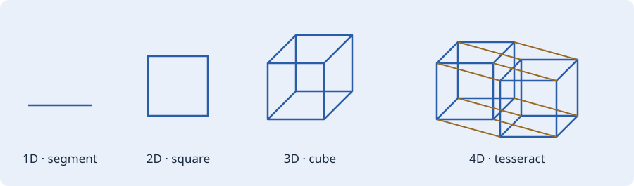

A visual introduction
Another dimension.
Another direction.
You can reason about a fourth dimension without first being able to picture it. Start with patterns you already understand, then extend them one step further.
Build a cube by making a copy.
A line segment has one independent direction. Copy it sideways and connect the matching ends: now you have a square. Copy the square in a third independent direction and connect matching corners: a cube.
Apply the same rule once more. Two cubes, connected corner to corresponding corner in a fourth independent direction, form a tesseract. That new direction is perpendicular to all three earlier coordinate directions. The diagram can only suggest it through projection.

A coordinate is simply a number telling us how far to go in one direction. A 4D point needs four numbers. HyperRotation extends the same construction to points with five or six coordinates.
Think about a cube’s shadow.
A cube can cast a flat shadow. That shadow can stretch, overlap, or hide edges even though the cube itself stays rigid. The flat image leaves out information about depth.
HyperRotation does something similar: it turns a higher-dimensional point into a 3D point by retaining its first three coordinates. Then a perspective camera turns that 3D scene into your screen image.
Two different corners can overlap in projection. An edge can seem to shrink or vanish. Those changes describe the view, while the original hypercube keeps its shape.
See the calculation →A rotation lives in a plane.
Imagine a point traveling around the center of a circle. It stays in a plane and keeps the same distance from the center. In ordinary 3D space we often describe this motion using a perpendicular axis instead.
Choose a center. A plane through it has a unique perpendicular line through it in 3D, so the plane and axis give equivalent ways to locate a simple rotation. The angle and a direction convention specify the motion.
In 4D, the directions perpendicular to a rotation plane form another plane, rather than a single line. One axis no longer supplies the information needed. Thinking in rotation planes continues to work.
Make a prediction, then try it.
Choose 4D and one plane below. What shape will the white corner trace? Switch to two planes. Can you tell the difference between a repeated projected crossing and a return to the same higher-dimensional position?
Enable JavaScript to compare single-plane and combined rotations. The gold line records a recent projected path.
Browser teaching illustration. Tracing and manual pause are available in Android Sandbox and Muse. The 5D/6D presets keep the extra coordinates fixed, allowing some distinct vertices to overlap.
For an educator
Ask learners to sketch a prediction before touching a control. Compare “one plane” with both two-plane presets, then pause and draw the trace. Ask which observations concern the original geometry and which concern only its projection.
Try 3D with the two-plane presets. A fixed 3D rotation still has an equivalent axis. In 4D, two rotations in separate coordinate planes allow motion with no fixed axis at all.
Continue with the mathematics →